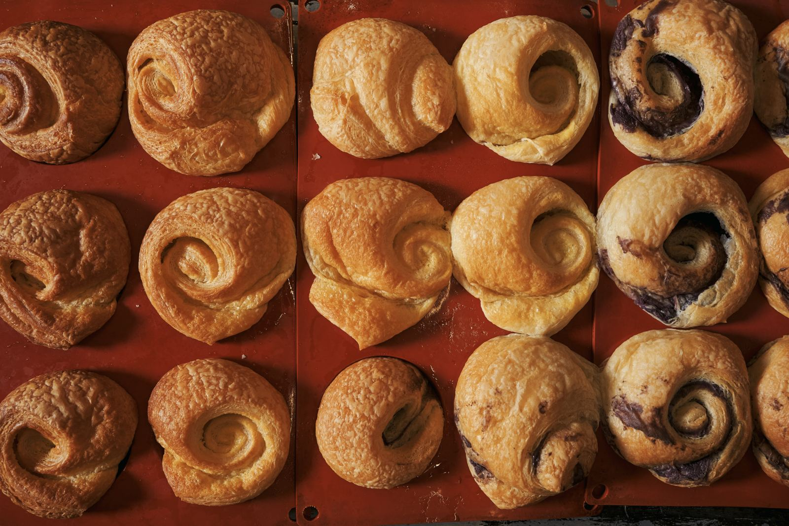
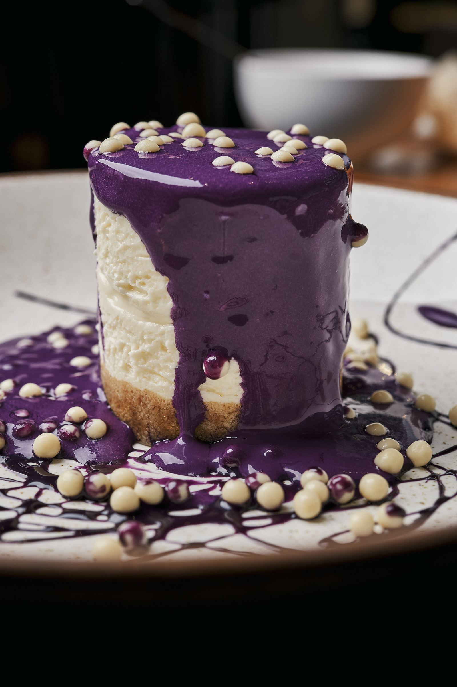
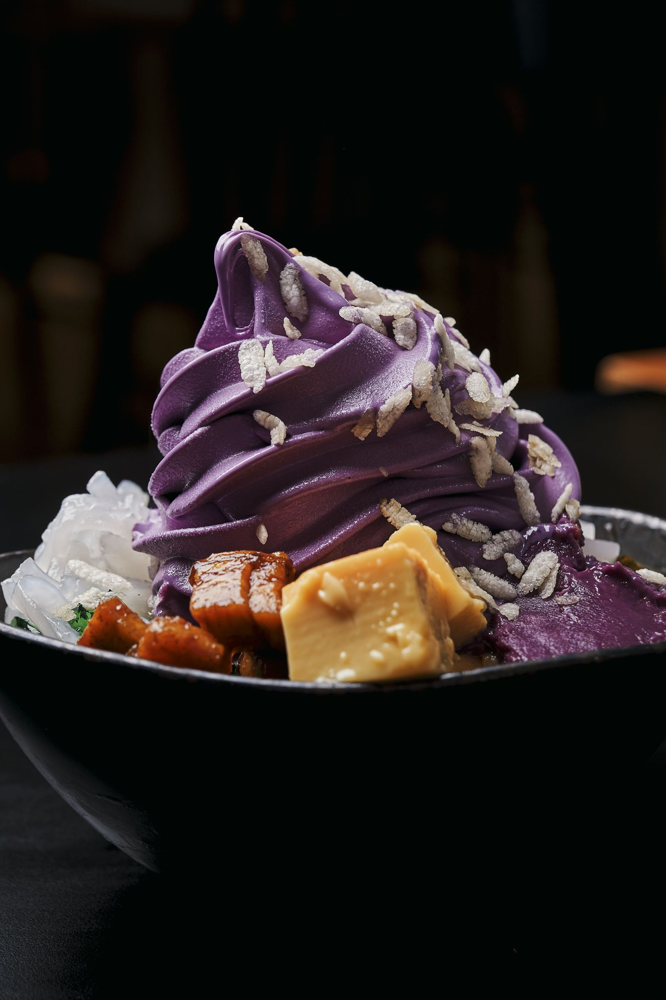
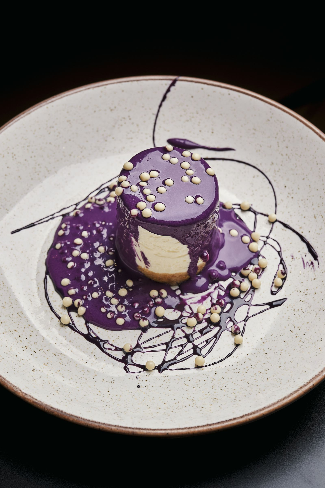
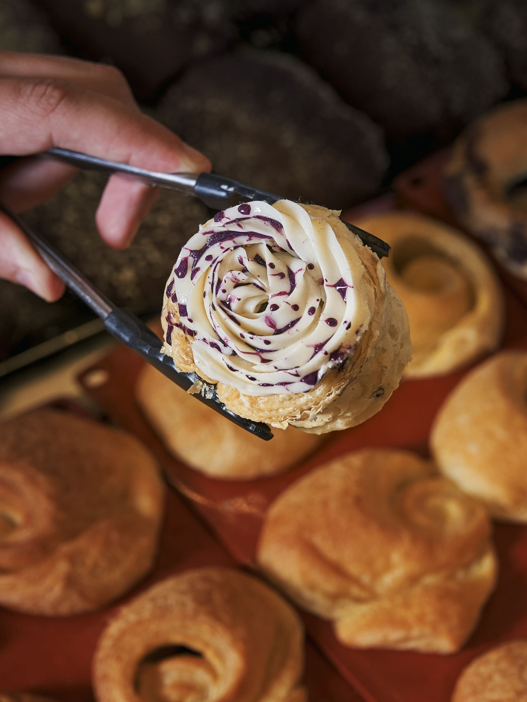
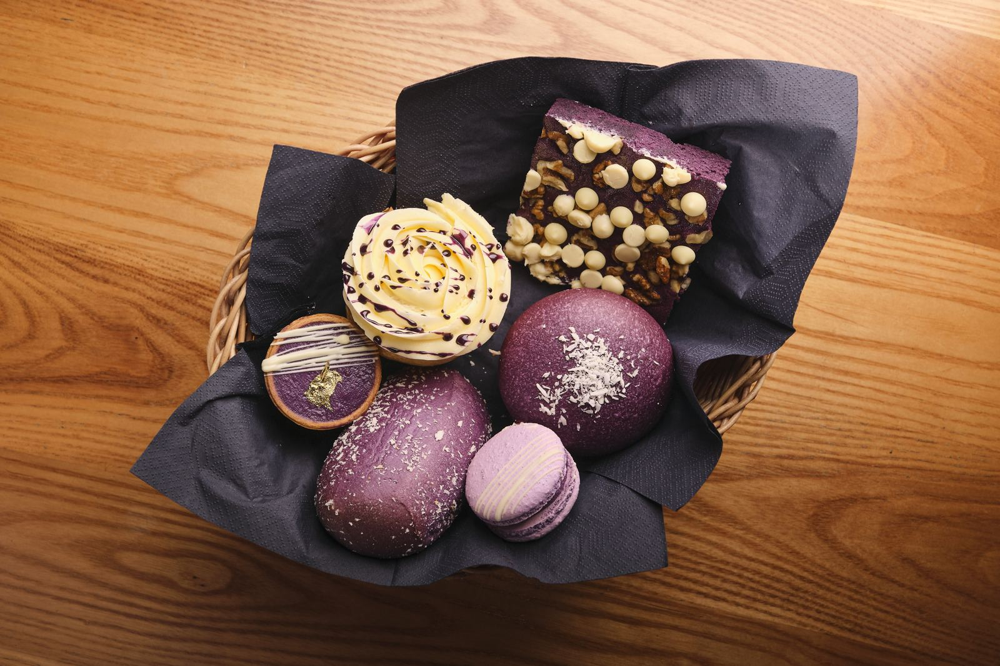

Pandesal
The Filipino bread roll: soft, a little sweet, with a breadcrumb crust. Plain, or filled with ube jam, cream cheese, coconut macapuno or corned beef.
[PRICE]
Bakery & patisserie
Pandesal, ensaymada, ube cakes and Filipino pastries, fresh every morning. Eat in with a coffee or take a box back to the office.
What we bake
The Filipino bread roll: soft, a little sweet, with a breadcrumb crust. Plain, or filled with ube jam, cream cheese, coconut macapuno or corned beef.
[PRICE]

Buttery brioche swirl, sugar, grated cheese on top. Classic, or ube.
[PRICE]

The one in the window. Cut it and the centre pours. Classic or ube, by the slice or whole.
[PRICE]

Dense, rich Filipino crème caramel. Small, dangerous.
[PRICE]

Layered ube sponge with ube cream. The birthday cake of the Philippines.
[PRICE]

Proper espresso, Filipino barako coffee, calamansi juice and ube lattes. Yes, ube lattes.
[PRICE]
Whole cakes
Whole ube cakes, tsunami cheesecakes and pandesal boxes for birthdays, offices and parties. Give us 48 hours' notice and collect from the counter, or ask about delivery in central London.

Eat in
Walk-in, no booking. Take a window seat with a pandesal and a barako coffee and watch Poland Street wake up. Laptops welcome before noon.
Come early for the best of the counter, or order a box for later.